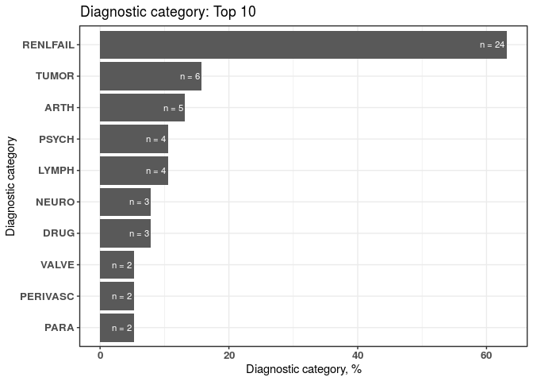

The proposed open-source dxpr package is a software tool aimed at expediting an integrated analysis of electronic health records (EHRs). The dxpr package provides mechanisms to integrate, analyze, and visualize clinical data, including diagnosis and procedure records.
Feature
-
Data integration Transform codes into uniform format and group code into several categories.
- Data Wrangling Generate statistical information about dataset and transform data into wide format, which fits better to other analytical and plotting packages.
- Visualization Provide overviews for the result of diagnoses standardization and the grouped categories of diagnosis codes.
Getting started
- Diagnostic part
English: https://dhlab-tseng.github.io/dxpr/articles/Eng_Diagnosis.html
Chinese: https://dhlab-tseng.github.io/dxpr/articles/Chi_Diagnosis.html
- Procedure part
English: https://dhlab-tseng.github.io/dxpr/articles/Eng_Procedure.html
Chinese: https://dhlab-tseng.github.io/dxpr/articles/Chi_Procedure.html
Development version
# install.packages("remotes")
remotes::install_github("DHLab-TSENG/dxpr")
Usage
library(dxpr)
head(sampleDxFile)
#> ID ICD Date Version
#> 1: A2 Z992 2020-05-22 10
#> 2: A5 Z992 2020-01-24 10
#> 3: A8 Z992 2015-10-27 10
#> 4: A13 Z992 2020-04-26 10
#> 5: A13 Z992 2025-02-02 10
#> 6: A15 Z992 2023-05-12 10
# I. Data integration
# 1. Data standardization
short <- icdDxDecimalToShort(dxDataFile = sampleDxFile,
icdColName = ICD,
dateColName = Date,
icd10usingDate = "2015/10/01")
head(short$ICD)
#> ICD
#> 1: Z992
#> 2: Z992
#> 3: Z992
#> 4: Z992
#> 5: Z992
#> 6: Z992
tail(short$Error)
#> ICD count IcdVersionInFile WrongType Suggestion
#> 1: 75.52 4 ICD 9 Wrong format
#> 2: E03.0 4 ICD 9 Wrong version
#> 3: 650 4 ICD 10 Wrong version
#> 4: 123.45 3 ICD 10 Wrong format
#> 5: 755.2 3 ICD 9 Wrong format 755.29
#> 6: 7552 2 ICD 9 Wrong format 75529
# 2. Data grouping
ELIX <- icdDxToComorbid(dxDataFile = sampleDxFile,
idColName = ID,
icdColName = ICD,
dateColName = Date,
icd10usingDate = "2015/10/01",
comorbidMethod = elix)
head(ELIX$groupedDT)
#> Short ID ICD Date Comorbidity
#> 1: Z992 A2 Z992 2020-05-22 RENLFAIL
#> 2: Z992 A5 Z992 2020-01-24 RENLFAIL
#> 3: Z992 A8 Z992 2015-10-27 RENLFAIL
#> 4: Z992 A13 Z992 2020-04-26 RENLFAIL
#> 5: Z992 A13 Z992 2025-02-02 RENLFAIL
#> 6: Z992 A15 Z992 2023-05-12 RENLFAIL
head(ELIX$summarised_groupedDT)
#> ID Comorbidity firstCaseDate endCaseDate count period
#> 1: A0 RENLFAIL 2009-07-25 2013-12-20 5 1609 days
#> 2: A1 RENLFAIL 2006-11-29 2014-09-24 5 2856 days
#> 3: A10 RENLFAIL 2007-11-04 2012-07-30 5 1730 days
#> 4: A11 RENLFAIL 2008-03-09 2011-09-03 5 1273 days
#> 5: A12 RENLFAIL 2006-05-14 2015-06-29 5 3333 days
#> 6: A13 RENLFAIL 2006-04-29 2025-02-02 5 6854 days
# II. Data wrangling
groupedDataWide <- groupedDataLongToWide(dxDataFile = ELIX$groupedDT,
idColName = ID,
categoryColName = Comorbidity,
dateColName = Date)
head(groupedDataWide[,1:4])
#> ID ARTH CHRNLUNG DMCX
#> 1: A0 FALSE FALSE FALSE
#> 2: A1 FALSE FALSE FALSE
#> 3: A10 FALSE FALSE FALSE
#> 4: A11 FALSE FALSE FALSE
#> 5: A12 FALSE FALSE FALSE
#> 6: A13 FALSE FALSE FALSE
# IV. Visualization
plot_errorICD <- plotICDError(short$Error)
plot_groupedData <- plotDiagCat(groupedDataWide, ID)
plot_errorICD
#> $graph
#>
#> $ICD
#> ICD count CumCountPerc IcdVersionInFile WrongType Suggestion
#> 1: A0.11 20 18.35% ICD 10 Wrong format
#> 2: V27.0 18 34.86% ICD 10 Wrong version
#> 3: E114 8 42.2% ICD 10 Wrong format
#> 4: A01.05 8 49.54% ICD 9 Wrong version
#> 5: 42761 7 55.96% ICD 10 Wrong version
#> 6: Z9.90 6 61.47% ICD 10 Wrong format
#> 7: F42 6 66.97% ICD 10 Wrong format
#> 8: V24.1 6 72.48% ICD 10 Wrong version
#> 9: A0105 5 77.06% ICD 9 Wrong version
#> 10: 001 5 81.65% ICD 9 Wrong format 0019
#> 11: others 20 100% ICD 9 Wrong format
plot_groupedData
#> $graph
#>
#> $sigCate
#> DiagnosticCategory N Percentage
#> 1: RENLFAIL 24 63.16
#> 2: TUMOR 6 15.79
#> 3: ARTH 5 13.16
#> 4: LYMPH 4 10.53
#> 5: PSYCH 4 10.53
#> 6: DRUG 3 7.89
#> 7: NEURO 3 7.89
#> 8: PARA 2 5.26
#> 9: PERIVASC 2 5.26
#> 10: VALVE 2 5.26Getting help
See the GitHub issues page (https://github.com/DHLab-TSENG/dxpr/issues) to see open issues and feature requests.